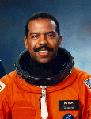

Lyndon B. Johnson Space Center
Houston, Texas 77058
|
National Aeronautics and Space Administration Lyndon B. Johnson Space Center Houston, Texas 77058 |
 |
Biographical Data |
||
NAME: Bernard A. Harris, Jr., (M.D.)
NASA Astronaut
PERSONAL DATA: Born June 26, 1956, in Temple, Texas. Married to the former Sandra Fay Lewis of Sunnyvale, California. They have one child. He enjoys flying, sailing, skiing, running, scuba diving, art and music. Bernard's mother, Mrs. Gussie H. Burgess, and his stepfather, Mr. Joe Roye Burgess, reside in San Antonio, Texas. His father, Mr. Bernard A. Harris, Sr., resides in Philadelphia, Pennsylvania. Sandra's parents, Mr. & Mrs. Joe Reed, reside in Sunnyvale.
EDUCATION: Graduated from Sam Houston High School, San Antonio, Texas, in 1974; received a bachelor of science degree in biology from University of Houston in 1978, a doctorate in medicine from Texas Tech University School of Medicine in 1982. Dr. Harris completed a residency in internal medicine at the Mayo Clinic in 1985. In addition, he completed a National Research Council Fellowship at NASA Ames Research Center in 1987, and trained as a flight surgeon at the Aerospace School of Medicine, Brooks Air Force Base, San Antonio, Texas, in 1988. Dr. Harris also received a master's degree in biomedical science from the University of Texas Medical Branch at Galveston in 1996.
ORGANIZATIONS: Member of the American College of Physicians, American Society for Bone and Mineral Research, Aerospace Medical Association, National Medical Association, American Medical Association, Minnesota Medical Association, Texas Medical Association, Harris County Medical Society, Phi Kappa Phi Honor Society, Kappa Alpha Psi Fraternity, Texas Tech University Alumni Association, and Mayo Clinic Alumni Association. Aircraft Owners and Pilot Association. Association of Space Explorers. American Astronautical Society. Member, Board of Directors, Boys and Girls Club of Houston. Committee Member, Greater Houston Area Council on Physical Fitness and Sports. Member, Board of Directors, Manned Space Flight Education Foundation Inc.
SPECIAL HONORS: 1996 Honorary Doctorate of Science, Morehouse School of Medicine. Medal of Excellence, Golden State Minority Foundation 1996. NASA Award of Merit 1996. NASA Equal Opportunity Medal 1996. NASA Outstanding Leadership Medal 1996. The Challenger Award, The Ronald E. McNair Foundation 1996. Award of Achievement, The Association of Black Cardiologists 1996. Space Act Tech Brief Award 1995. Alpha Omega Alpha Medical Honor Society, Zeta of Texas Chapter 1995. Election of Fellowship in the American College of Physicians 1994. Distinguished Alumnus, The University of Houston Alumni Organization 1994. Distinguished Scientist of the Year, ARCS Foundation, Inc., 1994. Life Membership, Kappa Alpha Psi Fraternity. NASA Space Flight Medals 1993, 1995. NASA Outstanding Performance Rating 1993. JSC Group Achievement Award 1993. Physician of the Year, National Technical Association, 1993. Achiever of the Year, National Technical Association, 1993. American Astronautical Society Melbourne W. Boynton Award for Outstanding Contribution to Space Medicine 1993. Achievement Award, Kappa Alpha Psi Fraternity 1993. Who's Who Among Rising Young Americans Citation 1992. Certificate of Merit, Governor of Texas 1990. City of San Antonio Citation for Achievement 1990. NASA Sustained Superior Performance Award 1989. NASA Outstanding Performance Rating 1988. NASA Sustained Superior Performance Award 1988, 1989. National Research Council Fellowship 1986, 1987. Phi Kappa Phi Honor Society 1985. Outstanding Young Men of America 1984. University of Houston Achievement Award 1978. Achievement Award 1978.
EXPERIENCE: After completing his residency training in 1985 at the Mayo Clinic, Dr. Harris then completed a National Research Council Fellowship at NASA Ames Research Center, Moffett Field, California. While at Ames he conducted research in the field of musculoskeletal physiology, and disuse osteoporosis, completing his fellowship in 1987. He then joined NASA Johnson Space Center as a clinical scientist and flight surgeon. His duties included clinical investigations of space adaptation and the development of countermeasures for extended duration space flight. Assigned to the Medical Science Division, he held the title of Project Manager, Exercise Countermeasure Project. Dr. Harris holds several faculty appointments. He is an associate professor in internal medicine at the University of Texas Medical Branch; an assistant professor at the Baylor College of Medicine; a clinical professor at the University of Texas School of Medicine; and is an adjunct professor at the University of Texas School of Public Health. He is a member, Board of Regents for the Texas Tech University Health Science Center in Lubbock, Texas. Fellow, American College of Physicians. He is the author and co-author of numerous scientific publications. In addition, Dr. Harris has been in group medical practice in internal medicine with both the South Texas Primary Care in San Antonio, Texas, and with the San Jose Medical Group in San Jose, California. Dr. Harris is also a licensed private pilot.
Selected by NASA in January 1990, Dr. Harris became an astronaut in July 1991. He is qualified for assignment as a mission specialist on future Space Shuttle flight crews. He served as the crew representative for Shuttle Software in the Astronaut Office Operations Development Branch. A veteran of two space flights, Dr. Harris has logged more than 438 hours in space. He was a mission specialist on STS-55 (April 26 to May 6, 1993), and was the Payload Commander on STS-63 (February 2-11, 1995).
Dr. Harris was assigned as a mission specialist on STS-55, Spacelab D-2, in August 1991, and later flew on board Columbia for ten days, (April 26 to May 6, 1993), marking the Shuttle's one year of total flight time. Dr. Harris was part of the payload crew of Spacelab D-2, conducting a variety of research in physical and life sciences. During this flight, Dr. Harris logged over 239 hours and 4,164,183 miles in space.
Most recently, Dr. Harris was the Payload Commander on STS-63 (February 2-11, 1995), the first flight of the new joint Russian-American Space Program. Mission highlights included the rendezvous with the Russian Space Station, Mir, operation of a variety of investigations in the Spacehab module, and the deployment and retrieval of Spartan 204. During the flight, Dr. Harris became the first African-American to walk in space. He logged 198 hours, 29 minutes in space, completed 129 orbits, and traveled over 2.9 million miles.
Dr. Harris left NASA in April 1996. He is Chief Scientist and Vice-President of Science and Health Services.
JANUARY 1999
{kind=link}